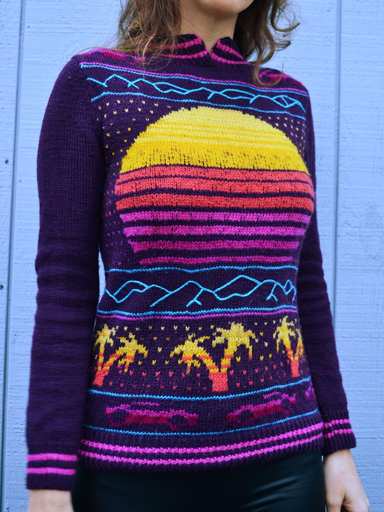
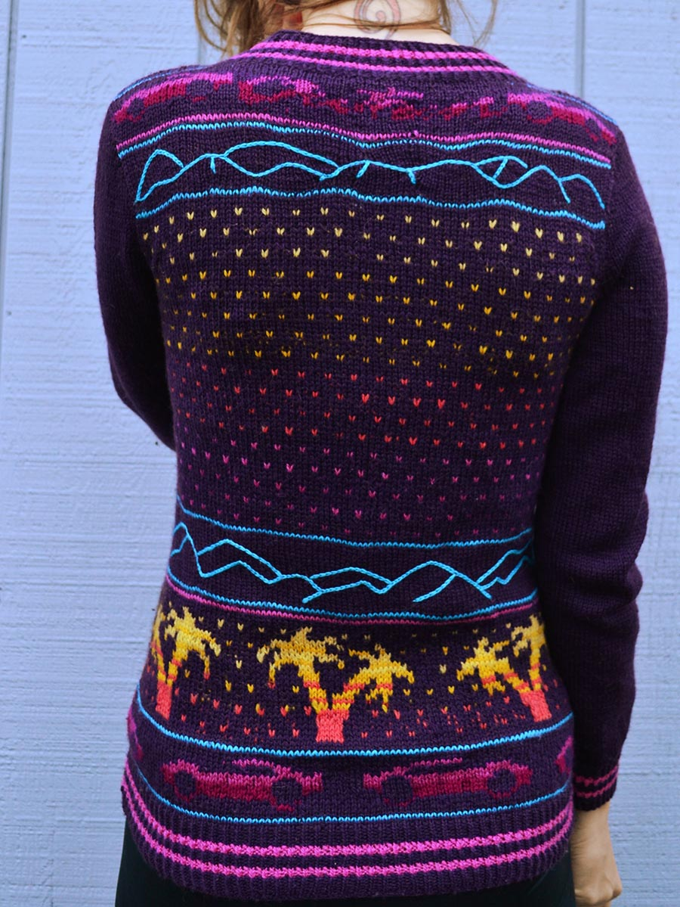
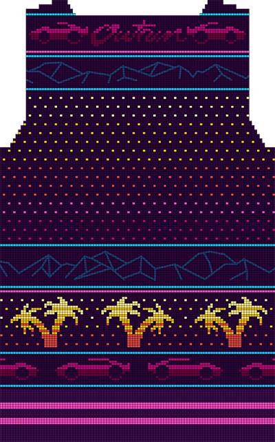
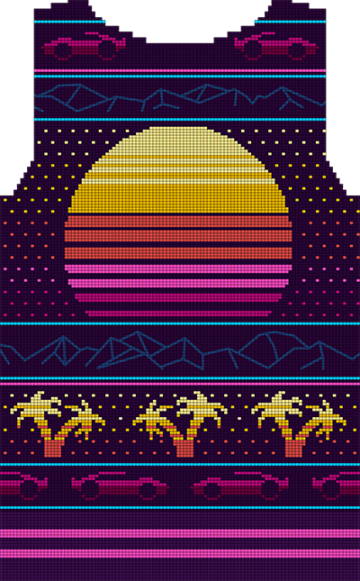

Synthwave Sweater
I would knit to be with you


These notes are intended to clarify some of the details of a sweater I made, and allow for a jumping off point for anyone who happens to be interested in making it. I haven't got the motivation to turn this into a full blown pattern (too much work to scale it to all the necessary sizes and write out all the technical details for what is realistically a very niche pattern), but these are my build notes in case anyone out there does want to make it. And, while developing the chart and everything for myself, I did a very crappy job measuring my gauge the first time and accidentally started out making it way too big. So there are, at least, two different size charts.
If you are an advanced knitter, you shouldn't have too much trouble figuring it out as everything is charted. There are some vagaries that you'll have to figure out on your own, particularly with the shaping around the neckline and shoulders and some embroidery that is done to create the mountains. If you are a novice, you'll need to do some research to make sure you know what you're getting yourself into. I list some techniques that you'll want to know about before diving in.
If you are asking someone to make this sweater for you, make sure that you are really special to them and do something really nice in return for their efforts. And don't be surprised if they tell you to gfy, because this is a big ask.
Materials & Supplies
Yarn
Knit Picks Palette
- Eggplant (Main color) - 5-7 balls
- Safflower - 1 ball
- Canary - 1 ball
- Rose Hip - 1 ball
- Cosmopolitan - 1 ball
- Fuchsia - 1 ball
- Fairy Tale - 1 ball
Knit Picks Capretta Neon Special Reserve
- Tubular Turquoise - 1 ball
Note: for all of the colors except Eggplant, far less than a full ball is used.
Needles
All needles are 36" circs
- 1 (2.25mm) - used for hems/cuffs/collar rib
- 4 (3.5mm) - used for stranted/stockinette sections
Notes
Gauge
On size 4 needles, plain stockinette:
- 6.5 sts per inch (26 per 10cm)
- 9 rows per inch (36 per 10cm)
Sizing
There are notes and charts for two sizes only, small and [large].
Finished Measurements
- Chest: 33" (84 cm) [44" (112 cm)] circumference
- Length: 22" (56 cm) from shoulder to hem
- Sleeve length: 18" (46 cm) from underarm
Special Stitches
Twisted rib
The hem, cuffs, and collar are worked using twisted rib which keeps them nice and tight. Twisted rib is like regular k1, p1 rib, except the knit stitches are worked through the back loop.
Clean stripes on ribbed sections
When knitting stripes in ribbing, there are little jagged edges. To prevent this, the first row of a new color can be knit rather than worked in rib. Then continue in twisted rib for the remaining rows of that color.
Techniques Used
As this isn't a pattern, I don't go over in great detail how to construct each part of this sweater. These are the techniques that I employed. If you get stuck, try doing an internet search on one of these to figure out what to do, or look for patterns on Ravelry that have these characteristics. The people who wrote those patterns usually go into a lot of detail on how to do these techniques.
- Stranded knitting
- Steeking
- Knitting in the round
- German twisted cast on
- Sewn bind off (collar)
- Set in sleeves
- Short row shaping
- Surface crochet or chain stitch embroidery (mountains)
Charts
Small
{kind=link}
{kind=link}
{kind=link}
Large
![Front [L]](front--large.png){kind=link}
![Back [L]](back--large.png){kind=link}
![Sleeve [L]](sleeve-large.png){kind=link}
You can also download the original Photoshop Files
Body


Details
212 [284] sts are cast on — 106 [142] front and 106 [142] back.
The body is worked in the round from the bottom up according to the charts.
Chart notes
The first 24 rows of the chart (shown as lighter purple, although it is also worked in main color) are worked in twisted rib using smaller needles, then switch to larger needles for the remainder of the chart.
The mountain design is not knit, but is done after the fact using surface stitch crochet. Alternatively you can use chain stitch, which is an embroidery technique. The results are the same. When knitting, these sections are worked in stockinette stitch with the main color.
Note: to make the bottom of this sweater longer or shorter, the bottom mountain section is the easiest place to do it. Just knit a few more or a few less stockinette rows here.
The shaping for the set in sleeves can either be done by creating steeks, or by working that section flat. There aren't that many stranded rows, so I just worked them flat.
The neckline can be shaped either with short rows or by binding off on rows that have multiple decreases across a single row.
Collar
After the top is finished, the shoulders need to be seamed.
Then, using smaller needles, 132 [162] stitches are worked around the neckline. These may either be picked up and knit, if the neckline has been bound off, or maybe worked from the live stiches if short rows were used. Either way, the collar should be worked starting 4 stitches from the center front, with the last 8 stitches picked up to overlap the first 8.
15 rows are worked in twisted rib, alternating between pink and purple every 3 rows. Decrease 1 stitch at the beginning and end of each row for the last 4 rows to create the rounded edge.
Sleeves
Details
Sleeves worked from bottom up. They can be worked in the round, but the sleeve cap should be worked flat.
Cuffs
60 sts are cast on.
As with the body, the first 24 rows of the chart (shown as lighter purple, although it is also worked in main color) are worked in twisted rib using smaller needles, then switch to larger needles for the remainder of the sleeve.
Increases
Starting with the first stockinette row, increase rows are worked every 14 [7] rows until there are 78 [96 stitches]. Increase at both the beginning and end of each increase row.
Sleeve cap
8 [16] stitches are bound off for the underarm — 4 [9] on each side of the center. The remainder of the sleeve is worked back and forth, decrease according to the chart.
Seaming
The sleeves need to be sewn on to the body. Obviously.
About
Pattern, site, and sweater created by Stephanie Mason. She can be found on the internet in the following places:
Licensed under CC BY 4.0 Do with it as you will.